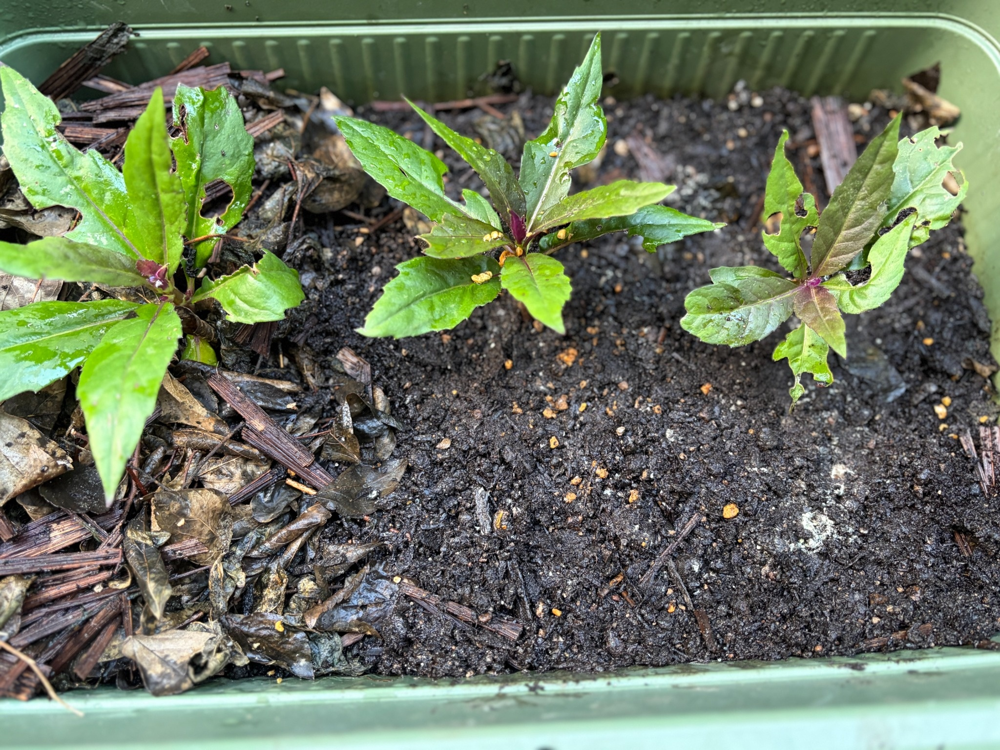

しおれ始めた苗を、プランターから3号ポットへ
7月22日には、プランターと3号ポットのどちらも、しおれずに葉を保っていた金時草。その後も様子を見ていましたが、プランターに直接挿した苗は、次第にしおれてきました。
このままでは枯れてしまうかもしれないと思い、5本ほどをプランターから3号ポットへ植え替えました。少しでも残ってくれればという気持ちで、途中からポットでの管理に切り替えました。
その後、プランターに残した苗はすべて枯れてしまいました。植え付け当初は葉を保っていただけに残念でしたが、最初から別に育てていたポット苗と、途中で移した苗の経過を引き続き見守りました。
最初からポットに挿した苗は、葉が大きくなる
一方、全滅に備えて最初から3号ポットに挿しておいた金時草は、葉が大きくなってきました。7月22日には、しおれずにいるものの発根の状態はまだ分かりませんでしたが、その後の葉の成長を見て、根付いてきたように感じました。
同じ金時草でも、直接プランターに挿した苗と、小さなポットで育てた苗とで、今回は経過が分かれました。最初にすべてをプランターへ挿さず、ポットにも分けておいてよかったと思います。
また、しおれ始めてから3号ポットへ移した5本ほどのうち、2本が生き残りました。すべてを残すことはできませんでしたが、途中で移した苗にも育ち続けてくれたものがあり、ほっとしました。
ポットの底から根を確認し、プランターへ植え替え
育った苗では、3号ポットの底から根が出ている様子を確認できました。葉を保っているだけの段階から、実際に根が伸びていることが分かり、植え替えに進むことにしました。
今度は、ポットで発根した苗をプランターへ植え替えました。最初のように根のない茎を直接挿すのではなく、根が出た状態でプランターへ移し、ここからの成長を見守ります。
いったんプランターの苗はすべて枯れてしまいましたが、別に育てていた苗と、途中で救い出した苗が残ってくれました。少量のひと束から始めた金時草の栽培を、こうして続けられることがうれしいです。
植え替えた苗は、間隔を空けて葉を広げる
8月30日のプランターには、写真に写る範囲で3か所に金時草が並んでいます。それぞれの間にはまだ土が広く見え、葉が重なってプランターを覆うほどには茂っていません。
左側の苗は、長めの葉を上下や横へ広げています。中央の苗は、枝先を中心に葉が放射状に開き、上向きに立つ細長い葉と、横へ伸びる葉が見られます。右側の苗にも、上向きの葉と左右に広がる葉があり、それぞれ少しずつ異なる姿をしています。
茎や葉の付け根には赤紫色が見え、緑色の葉との色の違いがはっきりしています。葉色は明るい緑色からやや濃い緑色まで幅があり、紫色を帯びた部分も交じっています。
葉の大きさには違いがあり、大きく開いた葉の近くには小さな葉も付いています。今後、こうした小さな葉が広がり、株全体の葉量が増えていくことを楽しみにしています。
葉には穴や欠けがあるものの、茎は立っている
葉には、不規則な形の穴や、縁が大きく欠けた部分が見られます。特に左側と右側の上向きの葉では傷みが目立ち、穴の周囲や葉の一部が茶色くなっているところもあります。
中央の苗にも葉の欠けがあり、きれいな葉ばかりではありません。ただ、苗全体がしおれて倒れ込んでいる状態ではなく、茎は立ち、葉もそれぞれの向きに広がっています。
葉には水滴が付き、土の表面も湿っています。葉の傷みが残る中でも、根付いた苗がこの先どのように葉を増やしていくか、植え替え後の様子を見ていきたいと思います。
現時点では、花や蕾は見られません。まずはプランターでの生育が落ち着き、枝葉が育ってくれることを願っています。
今後はポットで発根させてから植え替えたい
今回、プランターへ直接挿した苗は枯れてしまい、3号ポットで育てた苗が残りました。途中で移した苗も2本が生き残り、ポットの底から根を確認して、再びプランターへ植え替えることができました。
この経験から、今後は金時草の挿し木をプランターへ直接行うことは控えたいと思います。まずは3号ポットで育て、発根を確認してからプランターへ移す方法で進めていきたいです。
残ってくれた苗を大切に育てながら、植え替え後の葉の張りや色、枝先の成長を引き続き記録していきます。
